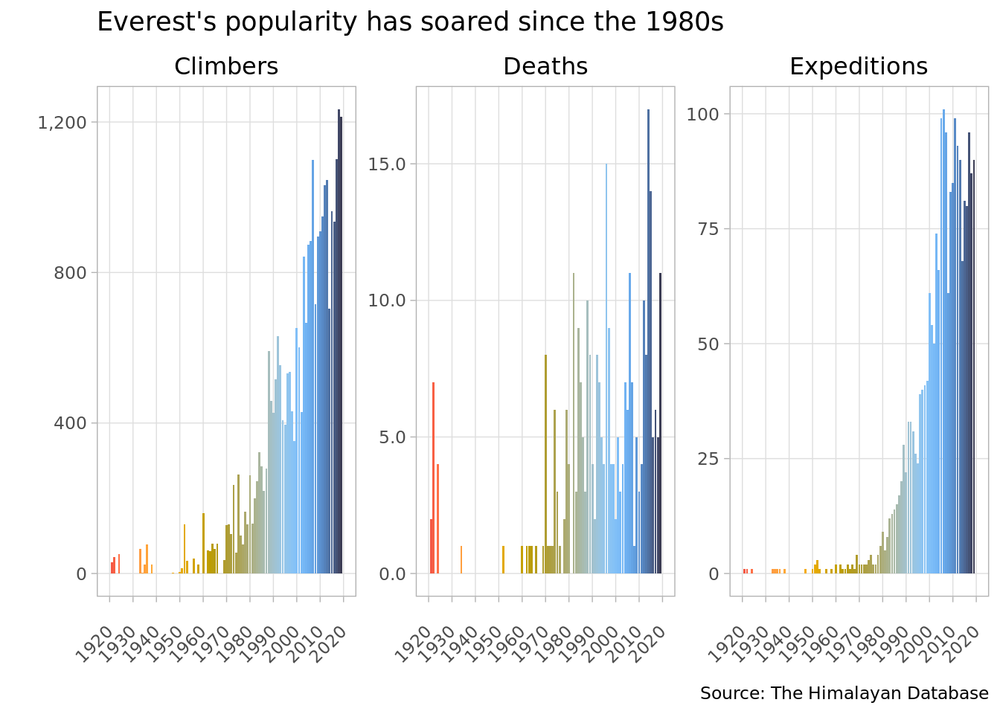
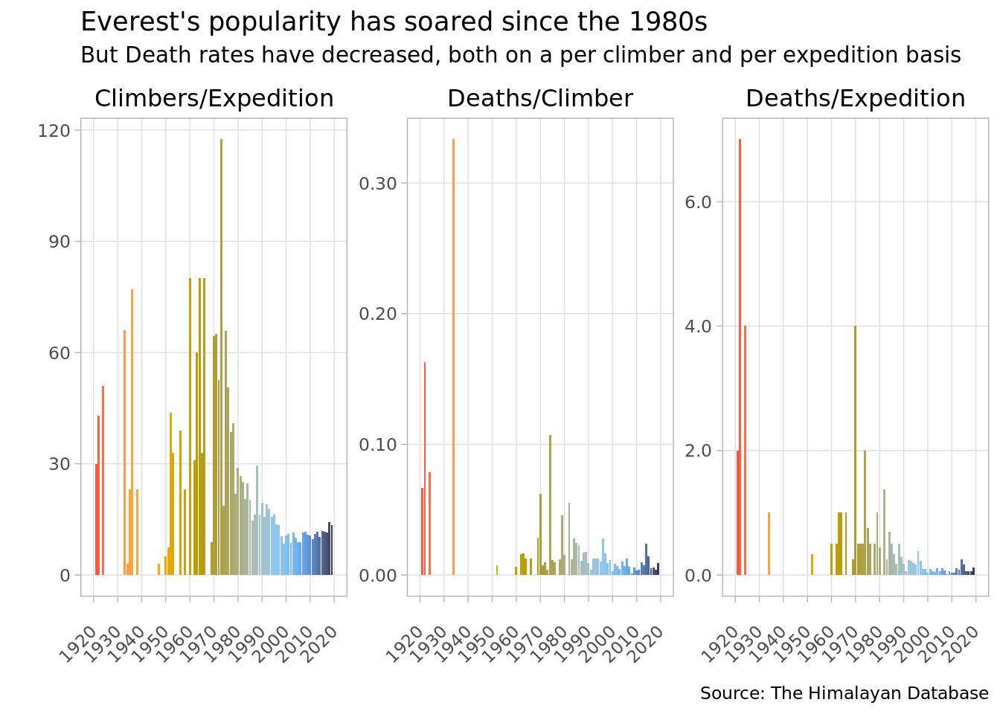
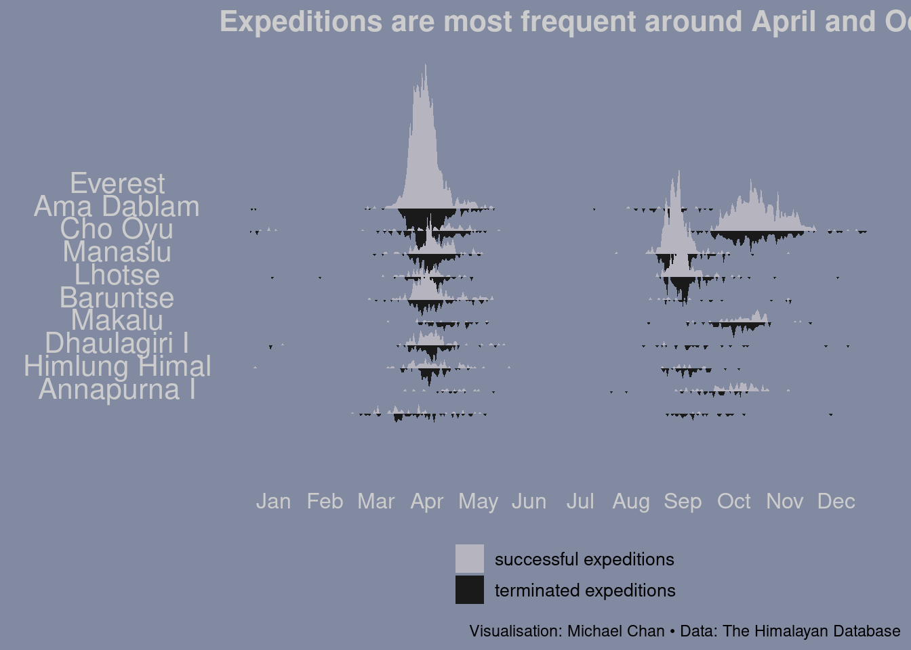

Himalaya 22-09-2020
22/09/2020
1 Himalayan Peaks
1.1 Data Inspection
Shows a list of 3 data sets, peaks, members and expeditions
1.2 Everest Only
exped <- tt_data$expeditions %>%
filter(peak_name == "Everest")
members <- tt_data$members %>%
filter(peak_name == "Everest") How popular is Everest, to climb.
sum_exped <- exped %>%
group_by(year) %>%
summarise(Expeditions = n(),
Climbers = sum(members + hired_staff),
Deaths = sum(member_deaths + hired_staff_deaths)) %>%
ungroup() %>%
complete(year = 1920:2020,
fill = list(Expeditions = 0, Climbers = 0, Deaths = 0)) %>%
pivot_longer(Expeditions:Deaths,names_to = "category", values_to = "number")## `summarise()` ungrouping output (override with `.groups` argument)rate_exped <- exped %>%
group_by(year) %>%
summarise(Expeditions = n(),
Climbers = sum(members + hired_staff),
Deaths = sum(member_deaths + hired_staff_deaths)) %>%
ungroup() %>%
mutate(climbers_exped = Climbers/Expeditions,
deaths_exped = Deaths/Expeditions,
deaths_climbers = Deaths/Climbers) %>%
complete(year = 1920:2020,
fill = list(climbers_exped = 0, deaths_exped = 0, deaths_climbers = 0)) %>%
select(year,climbers_exped:deaths_climbers) %>%
pivot_longer(climbers_exped:deaths_climbers,names_to = "category", values_to = "rate")## `summarise()` ungrouping output (override with `.groups` argument)sum_exped %>%
ggplot(aes(year, number, fill = year)) +
geom_col() +
facet_wrap( ~ category, scales = "free_y") +
scale_x_continuous(breaks = seq(1920, 2020, 10)) +
scale_y_continuous(labels = label_comma()) +
scale_fill_fish(option = "Pseudocheilinus_tetrataenia",
direction = 1) +
labs(
title = "Everest's popularity has soared since the 1980s",
caption = "Source: The Himalayan Database",
x = "",y = ""
) +
theme(
legend.position = "none",
text = element_text(family = "Bahnschrift"),
axis.text.x = element_text(angle = 45, vjust = 0.5, hjust=1),
panel.grid.minor = element_blank(),
strip.text = element_text(size = 12, colour = "black"),
strip.background = element_blank()
)
new_labels <- c("climbers_exped" = "Climbers/Expedition",
"deaths_climbers" = "Deaths/Climber",
"deaths_exped" = "Deaths/Expedition")
rate_exped %>%
ggplot(aes(year, rate, fill = year)) +
geom_col() +
facet_wrap( ~ category, scales = "free_y", labeller = labeller(category = new_labels)) +
scale_x_continuous(breaks = seq(1920, 2020, 10)) +
scale_y_continuous(labels = label_comma()) +
scale_fill_fish(option = "Pseudocheilinus_tetrataenia",
direction = 1) +
labs(
title = "Everest's popularity has soared since the 1980s",
subtitle = "But Death rates have decreased, both on a per climber and per expedition basis",
caption = "Source: The Himalayan Database",
x = "",y = ""
) +
theme(
legend.position = "none",
text = element_text(family = "Bahnschrift"),
axis.text.x = element_text(angle = 45, vjust = 0.5, hjust=1),
panel.grid.minor = element_blank(),
strip.text = element_text(size = 12, colour = "black"),
strip.background = element_blank()
)
library(ggtext)
expeditions <- readr::read_csv('https://raw.githubusercontent.com/rfordatascience/tidytuesday/master/data/2020/2020-09-22/expeditions.csv')## Parsed with column specification:
## cols(
## expedition_id = col_character(),
## peak_id = col_character(),
## peak_name = col_character(),
## year = col_double(),
## season = col_character(),
## basecamp_date = col_date(format = ""),
## highpoint_date = col_date(format = ""),
## termination_date = col_date(format = ""),
## termination_reason = col_character(),
## highpoint_metres = col_double(),
## members = col_double(),
## member_deaths = col_double(),
## hired_staff = col_double(),
## hired_staff_deaths = col_double(),
## oxygen_used = col_logical(),
## trekking_agency = col_character()
## )year_range <- 2000:2019
top_n_freq_peaks <-
expeditions %>%
filter(year %in% year_range) %>%
group_by(peak_name) %>%
summarise(total_expeditions = n()) %>%
top_n(10, total_expeditions) %>%
arrange(desc(total_expeditions)) %>%
mutate(peak_name = reorder(peak_name, rev(total_expeditions)))## `summarise()` ungrouping output (override with `.groups` argument)expeditions_daily <-
expeditions %>%
filter(peak_name %in% top_n_freq_peaks$peak_name & !is.na(basecamp_date) & year %in% year_range) %>%
mutate(day = lubridate::yday(basecamp_date),
success = if_else(str_detect(termination_reason, "Success"), TRUE, FALSE)) %>%
group_by(peak_name, day, success) %>%
summarise(num_expeditions = n()) %>%
mutate(num_expeditions = if_else(success, num_expeditions, -num_expeditions))## `summarise()` regrouping output by 'peak_name', 'day' (override with `.groups` argument)# Use this to fill missing days
all_days <- expand_grid(peak_name = top_n_freq_peaks$peak_name, day = c(1:365), success = c(TRUE, FALSE))
expeditions_daily_all <- all_days %>%
left_join(expeditions_daily) %>%
mutate(num_expeditions = replace_na(num_expeditions, 0),
peak_name = factor(peak_name, levels = top_n_freq_peaks$peak_name, ordered = TRUE))## Joining, by = c("peak_name", "day", "success")# Plot
expeditions_daily_all %>%
group_by(peak_name) %>%
ggplot(aes(x = day, y = num_expeditions)) +
geom_area(aes(fill = success), alpha = 1) +
scale_x_continuous(breaks = seq(15, 365, 30), labels = function(x) lubridate::month(as.Date(x, origin = '2019-01-01'), label = TRUE)) +
scale_fill_manual(labels = c("terminated expeditions", "successful expeditions"), values = c("#1a1a1a", "#b5b4bf")) +
facet_grid(rows = vars(peak_name), switch = "y") +
labs(title = "Expeditions are most frequent around April and October for the top 10 travelled peaks 2000-2019",
caption = "Visualisation: Michael Chan • Data: The Himalayan Database") +
theme_minimal() +
theme(plot.background = element_rect(color = "#818aa1", fill = "#818aa1"),
plot.title = element_text(size = 16, face = "bold", color = "grey80"),
axis.title = element_blank(),
axis.text.x = element_text(size = 12, colour = "grey80"),
axis.text.y = element_blank(),
strip.text.y.left = element_text(size = 16, angle = 0, vjust = 0.4, colour = "grey80"),
legend.position = "bottom",
legend.title = element_blank(),
legend.text = element_text(size = 10),
panel.grid = element_blank(),
panel.spacing.y = unit(-8, "lines")) +
guides(fill = guide_legend(ncol = 1, reverse = TRUE))